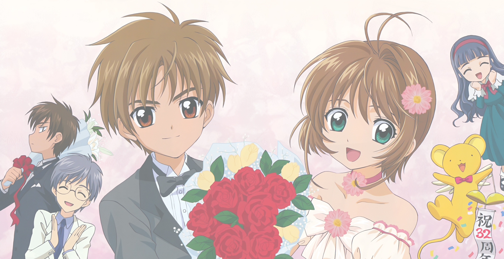

"I think... everything will be alright."

Welcome to Cherry Blossom, Little Wolf, my third revival attempt for my very ancient (in web time) shrine to one of manga/anime’s most beloved couples of all time, Sakura Kinomoto and Syaoran Li from CLAMP’s popular series, Card Captor Sakura. The revival of this shrine is dedicated to the 20th Anniversary of one of CLAMP’s most beloved series when its first manga volume was released in Japan back in May 1996. CLAMP has plans to commemorate this special year, and its fans are joining in the celebration. With this revival, I’m joining in the celebration too!
For the past 20 years, Japan has been very generous to us that they still sell plenty of CCS-related items. Thanks to the power of the internet, they aren't as difficult to find them as it used to back then. For this year, the 20th Anniversary illustrations collection art book was recently released back in late March. This coming June, we will be expecting a brand-new CCS story to continue from where we left off in the manga: seeing Sakura and Syaoran, both at age 14, reuniting with each other, at long last. In short, we can now get excited and go hanyaaa~n all over again!
Lots of stuff is coming up for our ちょう～可愛い (chou~kawaii) couple and all the gang of CCS, and for us fans, old and new, as well. Can't wait!
[5/4/16] A brand-new Card Captor Sakura manga will begin its serialization at Nakayoshi manga magazine starting in June 2016!
[5/4/16] Home page wireframe completed using Materialize. Now I gotta do the other sections.